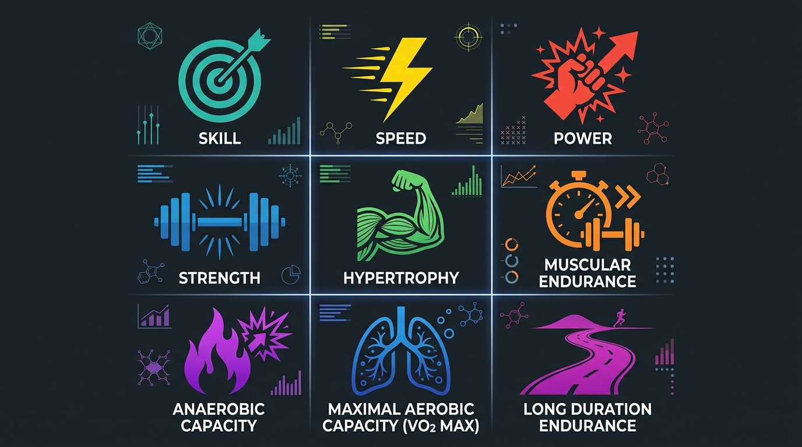
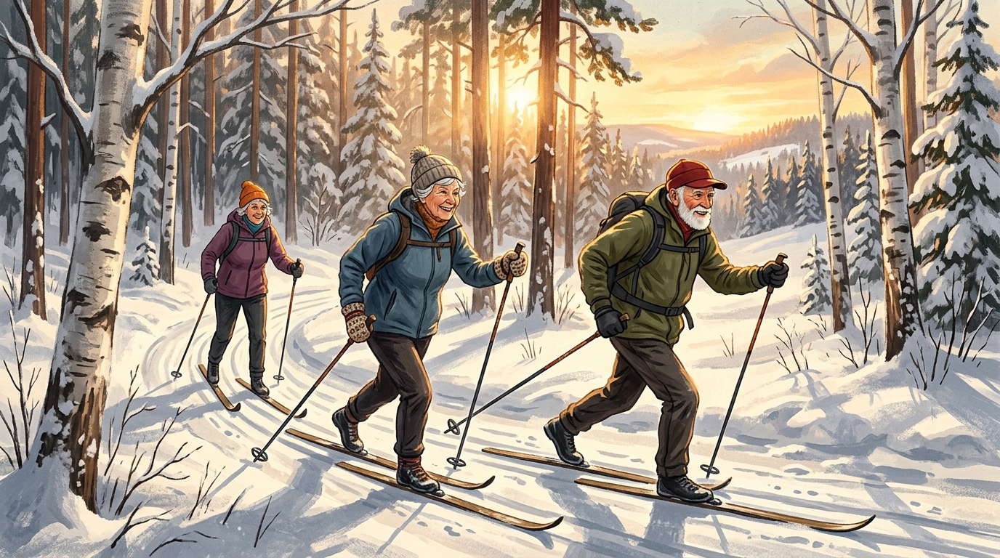
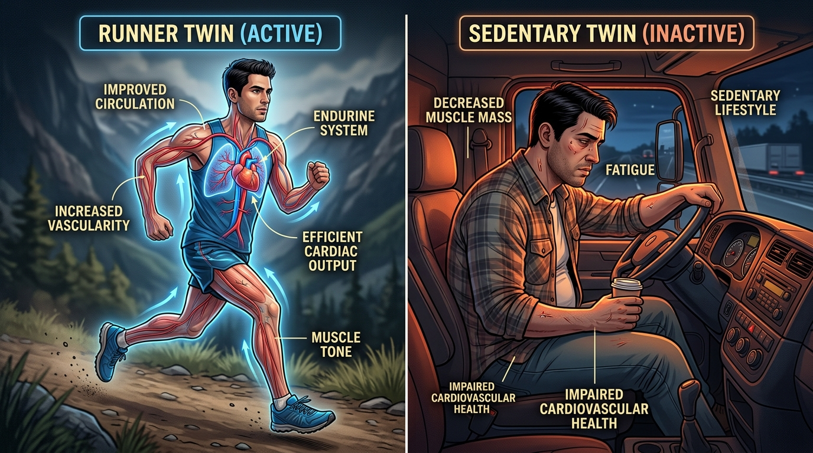
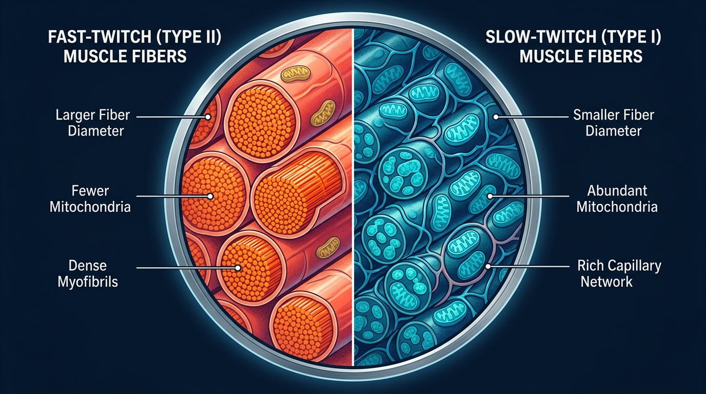
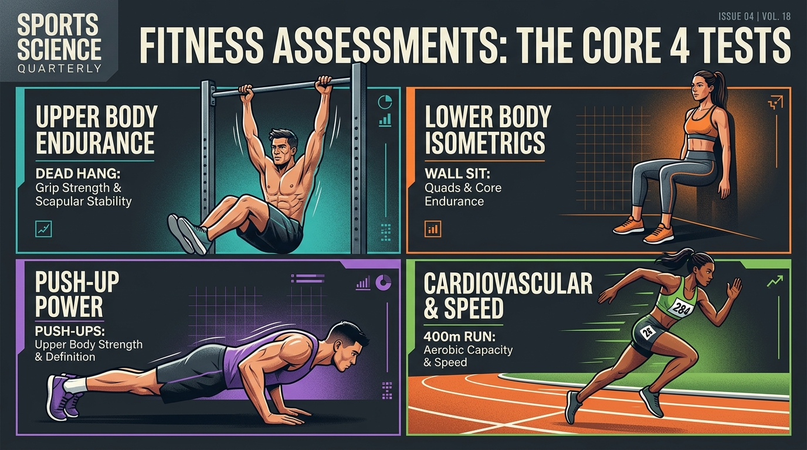

There are 9 adaptations. You need all of them.
Most people's exercise routines are siloed — they only run, or only lift, or only do yoga. Dr. Galpin's central thesis is that physical fitness isn't one thing. It's nine distinct physiological adaptations, each requiring specific training stimulus. Focusing on just one leaves critical gaps that directly impact your health, longevity, and daily function.
"The methods are many, but the concepts are few. If you understand the concepts, you can design your own methods." — Dr. Andy Galpin

Skill
Moving efficiently with proper technique
Speed
Higher velocity & rate of acceleration
Power
Speed × Force — explosive output
Strength
Maximum force production, one-rep max
Hypertrophy
Muscle size — the only aesthetic adaptation
Muscular Endurance
5-50 reps, localized to specific muscles
Anaerobic Capacity
All-out effort for 30-120 seconds
VO2 Max
Maximal aerobic capacity, 8-15 min range
Long Duration
Sustained sub-max work, 20-60+ minutes
Fat loss and general health are NOT separate adaptations — they're byproducts of training these nine. Your personal "health protocol" depends on which of the nine you're weakest in.
The 90-Year-Old Swedish Skiers

Lifelong endurance exercise: incredible cardiovascular fitness, but missing leg strength
At the Karolinska Institute in Stockholm, Dr. Galpin studied competitive cross-country skiers in their 80s and 90s — former Olympic gold medalists who had been skiing consistently for 50-60 years. Their VO2 max results were stunning.
A 92-year-old skier recorded a VO2 max of 38 ml/kg/min — believed to be a world record for anyone over 90. These elderly skiers had the cardiovascular fitness of average college students.
But here's the catch: their leg strength and functionality was no better than non-exercisers of the same age. Decades of endurance-only training left massive gaps in strength, power, and fast-twitch muscle fiber maintenance.
The Identical Twin Experiment

Same DNA, 35 years apart in lifestyle — the results confirm the Swedish findings
Dr. Galpin's graduate student casually mentioned her uncle and father were identical (monozygous) twins — one a lifelong endurance athlete, the other a sedentary truck driver. This was, as Galpin put it, "the perfect scientific experiment."
After 35 years of divergent lifestyles, the team ran every test imaginable: VO2 max, blood panels, muscle biopsies, MRIs, strength tests, vertical jump, even IQ and psychological batteries.
Where the exerciser won
VO2 max, lipid panel, resting heart rate, blood pressure — all cardiovascular markers were significantly better in the endurance twin. Slightly leaner body composition too.
Where the exerciser lost
Grip strength, vertical jump, leg extension power — the non-exercising twin was stronger in multiple functional tests. Total muscle mass was nearly identical between both.
The muscle fiber revelation
The non-exerciser had ~50% slow-twitch fibers (textbook normal). The lifelong runner had 95% slow-twitch — a near-complete conversion showing "the limits of physiological adaptation are darn near boundless."
Fast-Twitch vs. Slow-Twitch: Why It Matters for Aging

A hallmark of aging is the selective loss of fast-twitch muscle fibers. These fibers are only activated during high-force or explosive movements. Without that stimulus, the body discards them.
This is critical because fast-twitch fibers give you:
The speed to catch yourself from a fall
Getting your foot out in front of you fast enough requires fast-twitch recruitment. Slow-twitch fibers simply can't fire quickly enough.
The eccentric strength to absorb impact
Once your foot is planted, you need the braking force to stop the fall. This is an eccentric contraction that depends on Type II fibers.
Endurance training alone does not preserve fast-twitch fibers. Only high-force activities — heavy lifting, sprinting, explosive movements — keep them around as you age.
Dr. Galpin's Fitness Benchmarks
These are the at-home tests and target numbers Dr. Galpin recommends. No equipment or lab needed — just honest self-assessment.

| Test | What It Measures | Target (M) | Target (F) | Red Flag |
|---|---|---|---|---|
| Resting Heart Rate | Cardiovascular health | < 60 bpm | < 60 bpm | > 75 bpm |
| Dead Hang | Grip strength / endurance | 40+ sec | 30+ sec | < 20 sec |
| Push-ups (no pause) | Upper body muscular endurance | 25+ | 15+ | < 10 / < 5 |
| Front Squat Hold | Leg strength / mobility | ⅓ body weight for 45 sec | Can't hold position | |
| Plank (front) | Core muscular endurance | 60 sec | < 30 sec | |
| Side Plank | Lateral core endurance | 45 sec each side | < 20 sec | |
| FFMI | Sufficient muscle mass | ≥ 20 | ≥ 18 | < 17 / < 15 |
"If your resting heart rate is 75 beats per minute, there's either something going on or you're not fit. 60 to 80 is 'normal' — I don't agree with that at all." — Dr. Andy Galpin
The History That Shapes How You Exercise
A fascinating throughline of the episode is how the history of exercise science explains why most people's programs are suboptimal. Galpin traces the arc:
1880s-1950s: The Harvard Fatigue Lab era
Holistic view of human performance — scientists studied the body as a whole system, advocating a combination of strength and endurance. The "Exercise As Medicine" movement originated here.
1953-1970s: The Aerobics Revolution
Kenneth Cooper's "Aerobics" book and the jogging boom convinced an entire generation that cardio was the only exercise that mattered. Strength training was dismissed or feared.
1970s-2000s: The Bodybuilding Era
Arnold Schwarzenegger and the gym culture made lifting mainstream — but framed every exercise decision through the lens of maximizing muscle size. This created the assumption that all weight training = hypertrophy training.
2000s-Present: CrossFit & Functional Fitness
Filled gaps by combining modalities, but introduced new issues. The pendulum is now "slowly shifting into the middle" — picking optimal protocols from each discipline for specific adaptations.
Galpin's key insight: most misconceptions about exercise (e.g., "momentum is always cheating," "you must always go slow and controlled") come from applying bodybuilding assumptions to non-bodybuilding goals. There are excellent reasons to use momentum. There are reasons to go fast AND to go slow — it depends on which of the 9 adaptations you're training for.
5 Things to Remember
Fitness is 9 things, not one
Skill, speed, power, strength, hypertrophy, muscular endurance, anaerobic capacity, VO2 max, and long-duration endurance are all distinct adaptations requiring specific training.
One silo is not enough
The Swedish skiers and twin study prove it: even 50+ years of endurance training doesn't build strength. You need a combination to be truly healthy.
Consistency beats volume
The 80-90 year old skiers weren't doing shocking amounts of training. It was 50 years of consistent, moderate effort that gave them college-level VO2 max scores.
Fast-twitch fibers need deliberate work
Aging selectively kills fast-twitch fibers. Only high-force or explosive training preserves them — and you need them to catch yourself from falls and maintain functional independence.
Test yourself with Galpin's benchmarks
Resting heart rate under 60, 25+ push-ups, 40+ second dead hang, 60-second plank. Know your numbers, then train your weaknesses.
Watch the Full Episode
- Gold-standard lab tests vs. free alternatives — Galpin walks through both for every adaptation, so you can pick what fits your budget
- Exact warm-up protocols for one-rep max testing (via NSCA guidelines) — getting this wrong skews all your results
- The full history of exercise science — from the Harvard Fatigue Lab (1927) through the aerobics revolution, bodybuilding era, and CrossFit, and why each left blind spots in how people train today
- When to use momentum vs. slow controlled reps — Galpin dismantles the "momentum is cheating" myth with specific scenarios for each
- Women and resistance training — the NIH mandate, why female-specific exercise research barely exists, and what's changing
- The muscular endurance hack story — how one study participant quadrupled his push-up score by exploiting an unstandardized test protocol